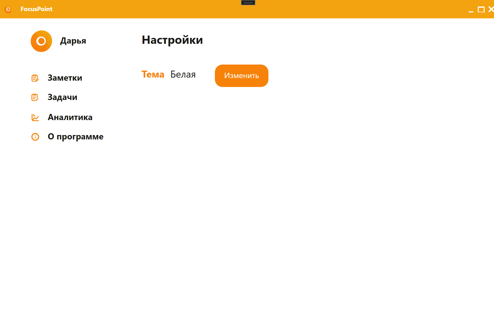

Авторизация
Эта форма позволяет пользователям войти в приложение, указав имя пользователя и пароль
ПодробнееРегистрация
Новые пользователи могут создать аккаунт, заполнив поля имени пользователя, логина и пароля
 Подробнее
Подробнее
Заметки
Управляйте своими заметками: добавляйте, редактируйте, удаляйте и фильтруйте их по категориям
ПодробнееЗадачи
Следите за своими задачами, устанавливайте дедлайны и обновляйте их статус
 Подробнее
Подробнее
Аналитика
Анализируйте свои задачи и заметки с помощью визуальных диаграмм и фильтров
 Подробнее
Подробнее
О программе
Узнайте больше о приложении FocusPoint, его создателях и назначении
 Подробнее
Подробнее
Настройки
Настройте тему приложения и другие предпочтения
 Подробнее